Nghiên cứu sử dụng Multiple Linear Regression (OLS) để giải quyết vấn đề cốt lõi trong Marketing Analytics: kênh quảng cáo nào thúc đẩy doanh số, và ngân sách phân bổ như thế nào để tối đa hoá Advertising ROI?
Theo khung ISL Marketing Plan (James et al., 2023, Ch. 3), phân tích bộ dữ liệu Advertising (n = 200) qua 7 câu hỏi nghiên cứu.
Chiến lược đề xuất: Loại bỏ Newspaper, tối đa hoá Radio, đồng lịch TV & Radio → dự kiến tăng doanh số +25% mỗi thị trường với tổng chi tiêu không đổi.
Keywords: Multiple Linear Regression, OLS, Advertising ROI, Sales Prediction, Synergy, Marketing Analytics, ISL
Công ty bán sản phẩm trên 200 thị trường độc lập, phân bổ ngân sách quảng cáo qua 3 kênh: TV, Radio, Newspaper. Trung bình chi $200.9K/thị trường nhưng thiếu bằng chứng khoa học.
Tiếp tục đầu tư vào các kênh kém hiệu quả trong khi thiếu đầu tư vào các kênh có ROI cao.
Bài toán hồi quy có giám sát: doanh số (nghìn đơn vị) là biến phản hồi Y, ba ngân sách quảng cáo (nghìn đô la) là các biến dự báo X₁, X₂, X₃.
trong đó ε là nhiễu không thể rút gọn từ các yếu tố thị trường ngoài quảng cáo.
Áp dụng OLS theo ISL Marketing Plan — bảy câu hỏi nghiên cứu (James et al., 2023, Ch. 3) xây dựng từ sự tồn tại của mô hình → phân bổ kênh → dự báo → kiểm định → synergy.
| Biến | Vai trò | Mean | SD | Min | Max |
|---|---|---|---|---|---|
| TV | Predictor X₁ | $147.0K | $85.9K | $0.7K | $296.4K |
| Radio | Predictor X₂ | $23.3K | $14.9K | $0.0K | $49.6K |
| Newspaper | Predictor X₃ | $30.6K | $21.8K | $0.3K | $114.0K |
| Sales | Response Y | 14.02K | 5.22K | 1.6K | 27.0K |
| # | Câu hỏi kinh doanh | Phương pháp thống kê | Phần |
|---|---|---|---|
| Q1 | Có mối quan hệ giữa quảng cáo và doanh số không? | F-test | §5.1 |
| Q2 | Mối quan hệ đó mạnh đến mức nào? | R², RSE | §5.2 |
| Q3 | Kênh truyền thông nào đóng góp độc lập vào doanh số? | t-tests, MLR | §5.3 |
| Q4 | Tác động của mỗi kênh lớn bao nhiêu và chính xác đến đâu? | β̂, 95% CI | §5.4 |
| Q5 | Chúng ta có thể dự báo doanh số tại thị trường mới chính xác không? | Test RMSE, KNN | §5.5 |
| Q6 | Mô hình tuyến tính có phù hợp với dữ liệu này không? | LINE diagnostics | §5.6 |
| Q7 | Các kênh truyền thông có khuếch đại lẫn nhau (Synergy) không? | Interaction term | §5.7 |
"Suppose that in our role as statistical consultants we are asked to suggest, on the basis of this data, a marketing plan for next year that will result in high product sales. What information would be useful in order to provide such a recommendation?"
— James et al., An Introduction to Statistical Learning, Ch. 3.4
Nghiên cứu tuân theo Chapter 3 của An Introduction to Statistical Learning (ISL) — James, Witten, Hastie, Tibshirani (Springer, 2023).
Phương pháp từ ISL Ch. 3:
OLS: β̂ = (XᵀX)⁻¹Xᵀy (§3.1)
F-test, t-tests (§3.2)
TV × Radio interaction (§3.3.2)
LINE diagnostics (§3.3.3)
ISL trình bày dữ liệu này như ví dụ giảng dạy. Báo cáo này áp dụng vào bối cảnh quyết định kinh doanh thực tế, bổ sung 3 yếu tố:
Phân tích từng kênh một cách độc lập:
| Ký hiệu | Định nghĩa | Ý nghĩa |
|---|---|---|
| Sales | Biến phản hồi (nghìn đơn vị) | Mean = 14.02K |
| Channel | Biến dự báo (nghìn đô la) | TV, Radio, hoặc NP |
| β₀ | Hệ số chặn (Intercept) | Doanh thu nền |
| β₁ | Độ dốc (Slope) | ROI trên mỗi $1K |
| ε | Sai số không thể rút gọn | Yếu tố thị trường |
Mô hình hoá cả ba kênh đồng thời — mỗi β̂ⱼ là đóng góp duy nhất, loại trừ tương quan:
| Ký hiệu | Định nghĩa |
|---|---|
| β₁ | Tác động riêng phần TV: ΔSales/$1K giữ nguyên Radio & NP |
| β₂ | Tác động riêng phần Radio: ΔSales/$1K giữ nguyên TV & NP |
| β₃ | Tác động riêng phần NP: ΔSales/$1K giữ nguyên TV & Radio |
Quan trọng: SLR không phân biệt tương quan vs nhân quả. MLR kiểm soát yếu tố gây nhiễu!
| Ký hiệu | Định nghĩa |
|---|---|
| TV × Radio | Tích ngân sách TV và Radio cùng thị trường |
| β₄ | Synergy: độ dốc TV thay đổi bao nhiêu trên mỗi $1K Radio |
| β₄ > 0 | Kênh bổ sung — kết hợp > tổng riêng lẻ |
| ∂Sales/∂TV | = β̂₁ + β̂₄ × Radio — tăng theo Radio |
Nguyên tắc phân cấp: Hiệu ứng chính TV và Radio vẫn trong mô hình ngay cả khi thêm tương tác, bất kể p-value.
| Giả định | Điều kiện | Chẩn đoán |
|---|---|---|
| Linearity | E[εᵢ] = 0 | Residuals vs Fitted |
| Independence | Cov(εᵢ,εⱼ)=0 | Durbin-Watson ≈ 2 |
| Normality | εᵢ ~ N(0,σ²) | Q-Q + Shapiro-Wilk |
| Equal var. | Var(εᵢ) = σ² | Scale-Loc + B-P test |
Advertising dataset: n = 200 thị trường, không có giá trị bị thiếu, dữ liệu chéo.
| Biến | Mean | SD | Min | Median | Max | Vai trò |
|---|---|---|---|---|---|---|
| TV | $147.04K | $85.85K | $0.7K | $149.8K | $296.4K | Predictor |
| Radio | $23.26K | $14.85K | $0.0K | $22.9K | $49.6K | Predictor |
| Newspaper | $30.55K | $21.78K | $0.3K | $25.8K | $114.0K | Predictor |
| Sales | 14.02K | 5.22K | 1.6K | 12.9K | 27.0K | Response |
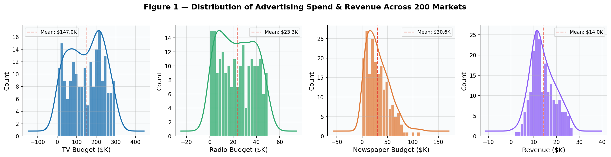
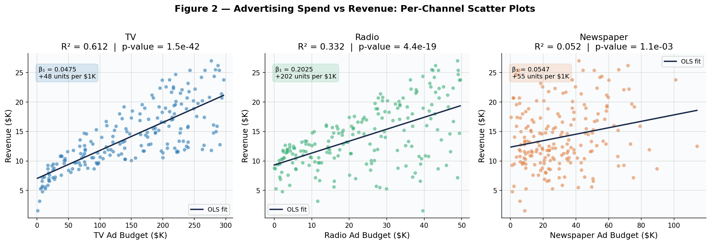
TV (trái): Độ dốc mạnh, tập trung gần đường. SLR R² = 0.612. Mỗi $1K → +47 đơn vị.
Radio (giữa): Dương vừa phải, R² = 0.332. Hiệu quả cao nhưng nhiều biến động hơn.
Newspaper (phải): Gần phẳng, R² = 0.052. Tăng ngân sách → không thay đổi hệ thống.
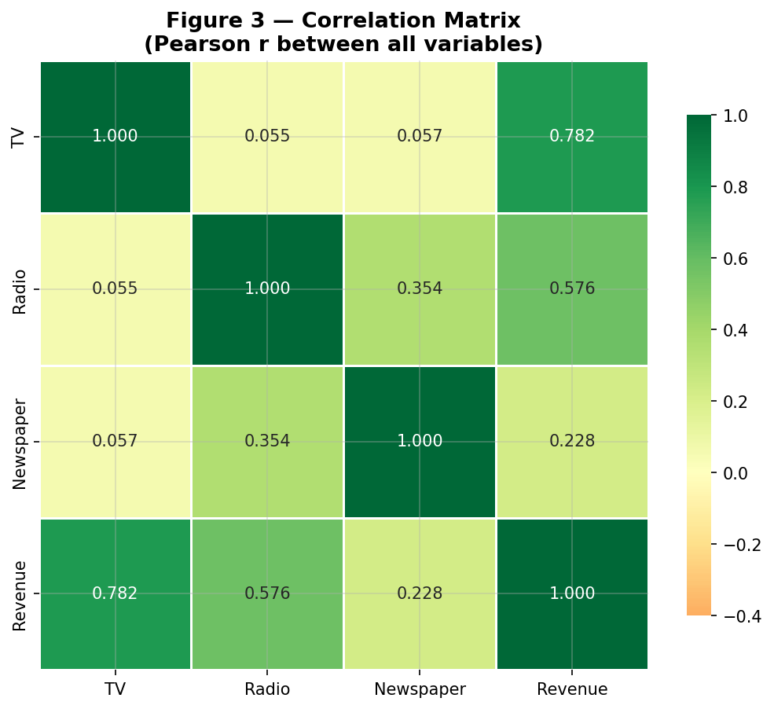
| Cặp biến | r | Ý nghĩa |
|---|---|---|
| TV ↔ Sales | 0.782 | Mạnh nhất |
| Radio ↔ Sales | 0.576 | Hữu ích |
| Newspaper ↔ Sales | 0.228 | Yếu |
| Radio ↔ NP | 0.354 | Gây nhiễu! |
Radio ↔ Newspaper r = 0.354. Thị trường chi nhiều Radio cũng chi nhiều Newspaper → Newspaper "mượn" tín dụng Radio trong SLR!
Sẽ giải thích chi tiết trong Q3.
Tập test niêm phong cho đến Q5 — sử dụng trước sẽ tạo ra ước tính quá lạc quan.
Bối cảnh: Trước khi phân bổ lại, cần bằng chứng quảng cáo thực sự gây ra biến động doanh số.
| Thống kê | Giá trị | Diễn giải |
|---|---|---|
| F(3, 196) | 570.3 | Tốt hơn 570× dự báo mean |
| p-value | < .001 | Bằng chứng áp đảo, bác bỏ H₀ |
| R² | 0.8972 | 89.7% biến động được giải thích |
| Adj R² | 0.8956 | 89.6% — không overfitting |
Chi tiêu quảng cáo là yếu tố được chứng minh thúc đẩy doanh số. P-value ≈ 0 — có < 0.001% khả năng do ngẫu nhiên. Chỉ ~10% chênh lệch doanh số do yếu tố không quan sát.
Bối cảnh: Mô hình giải thích 50% thì thú vị; 90% thì triển khai thương mại được.
| Chỉ số | Giá trị | Ý nghĩa |
|---|---|---|
| R² | 0.8972 | 90% biến động giải thích |
| Adj R² | 0.8956 | Không overfitting |
| RSE | 1,685.5 | Sai số ±$1,686/thị trường |
| Sai số tương đối | 12.0% | Dự báo trong ±12% |
| Mô hình | R² | RMSE |
|---|---|---|
| TV only | 0.612 | 3.26K |
| Radio only | 0.332 | 4.28K |
| NP only | 0.052 | 5.09K |
| MLR 3 kênh | 0.897 | 1.69K |
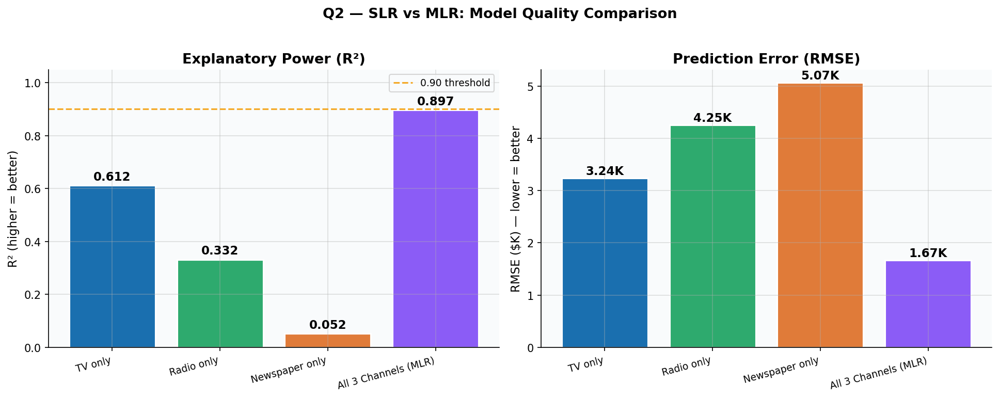
Kết luận: Triển khai được. R² = 0.90, sai số ±12%. Phải dùng cả 3 kênh cùng lúc!
Bối cảnh: Câu hỏi phân bổ ngân sách cốt lõi. Kênh nào thực sự thúc đẩy doanh số?
| Kênh | β̂₁ | R² | p-value | Return/$1K |
|---|---|---|---|---|
| TV | 0.0475 | 0.612 | < .001 | +47.5 |
| Radio | 0.2025 | 0.332 | < .001 | +202.5 |
| Newspaper | 0.0547 | 0.052 | < .001 | +54.7 |
⚠ Cả 3 có ý nghĩa trong SLR — gây hiểu lầm cho Newspaper!
| Kênh | β̂ | p-value | 95% CI | Kết luận |
|---|---|---|---|---|
| TV | 0.0458 | <.001 | [.043,.049] | Có ý nghĩa |
| Radio | 0.1885 | <.001 | [.172,.206] | Có ý nghĩa |
| NP | −0.001 | .860 | [−.013,.011] | Không ý nghĩa |
Gây nhiễu: Radio ↔ NP r=0.354. Khi MLR kiểm soát Radio → NP sụp đổ về 0. Hiệu ứng biến thay thế kinh điển.
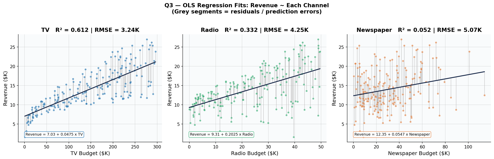
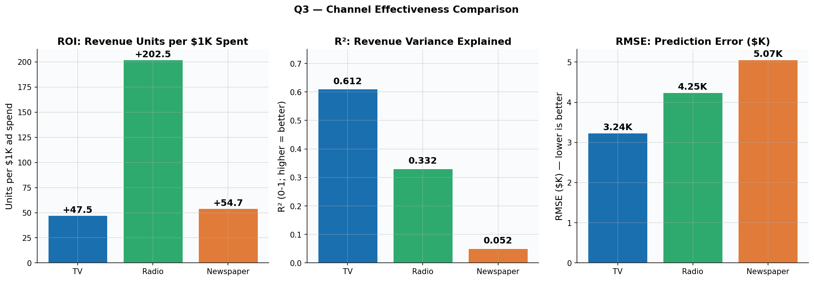
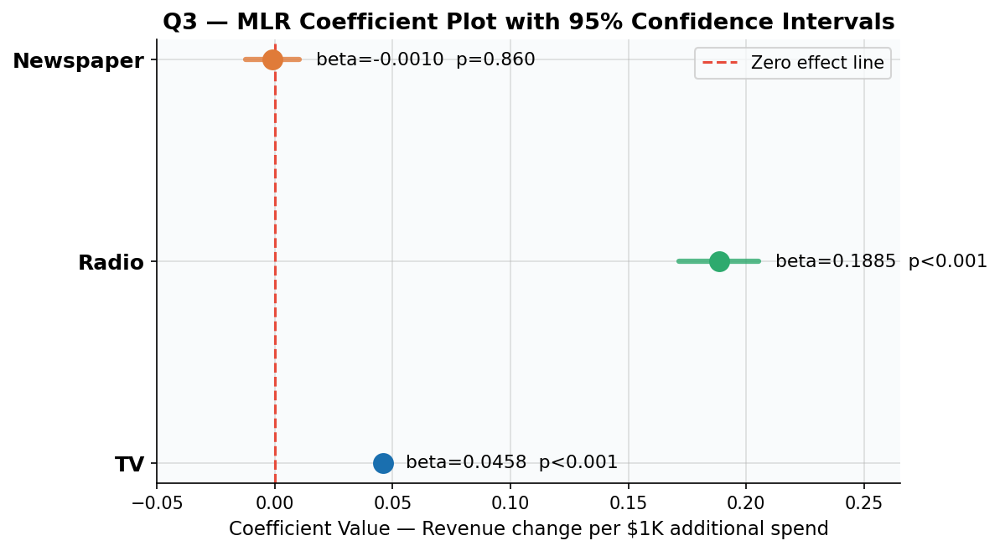
TV & Radio: thanh nằm hoàn toàn bên phải đường 0 → tác động thực sự. Newspaper: bắt qua 0 → không phân biệt với nhiễu.
| Xếp hạng | Kênh | MLR β̂ (mỗi $1K) | Ý nghĩa | Khuyến nghị ngân sách |
|---|---|---|---|---|
| 1 | Radio | +0.1885 (+189 đơn vị) | p < .001 | TANG — ROI/$1K cao nhất |
| 2 | TV | +0.0458 (+46 đơn vị) | p < .001 | DUY TRI / TANG — động lực khối lượng |
| 3 | Newspaper | −0.0010 (~0 đơn vị) | p = .860 | LOAI BO — ROI = 0 |
Chuyển 100% ngân sách Newspaper sang Radio và TV. Mỗi đô la chuyển từ Newspaper (0 return) sang Radio (+189 đơn vị/$1K) trực tiếp tăng tổng doanh số.
TV vẫn thiết yếu — thúc đẩy 61% biến động doanh số và neo hiệu ứng synergy (Q7).
Bối cảnh: Lãnh đạo cần số chính xác: bao nhiêu đơn vị mỗi $1K? Tự tin đến đâu?
| Kênh | β̂ (đơn vị/$1K) | 95% CI | Khoảng |
|---|---|---|---|
| TV | +46 | [+0.043, +0.049] | +43 đến +49 |
| Radio | +189 | [+0.172, +0.206] | +172 đến +206 |
| NP | ~0 | [−0.013, +0.011] | −13 đến +11 |
TV = 1.00, Radio = 1.14, NP = 1.15 — tất cả < 5 ✓
| Kênh | Tăng | Dự kiến | 95% range |
|---|---|---|---|
| TV | +$50K | +2,290 | [2,150–2,425] |
| TV | +$100K | +4,580 | [4,300–4,850] |
| Radio | +$20K | +3,770 | [3,434–4,108] |
| Radio | +$30K | +5,655 | [5,151–6,162] |
| NP | Bất kỳ | ~0 | [−1,250–+1,050] |
Radio hiệu quả 4.1× so với TV trên mỗi đô la. Nhưng TV hoạt động ở quy mô lớn hơn nhiều ($0–$296K).
Bối cảnh: R² = 0.90 trên dữ liệu lịch sử — nhưng dự báo thị trường mới có chính xác không?
| Chỉ số | Train (160) | Test (40) | Gap |
|---|---|---|---|
| RMSE | 1.6447K | 1.7816K | 0.137K |
| R² | 0.8957 | 0.8994 | +0.004 |
| MAE | — | 1.4608K | ±$1,461 |
| Mô hình | RMSE | R² | Diễn giải? |
|---|---|---|---|
| LR | 1.782K | 0.899 | Có — β̂, CI, p |
| KNN K=4 | 1.419K | 0.936 | Không — hộp đen |
Ví dụ: TV=$200K, Radio=$30K, NP=$10K → 17.74K đơn vị ±$1,782
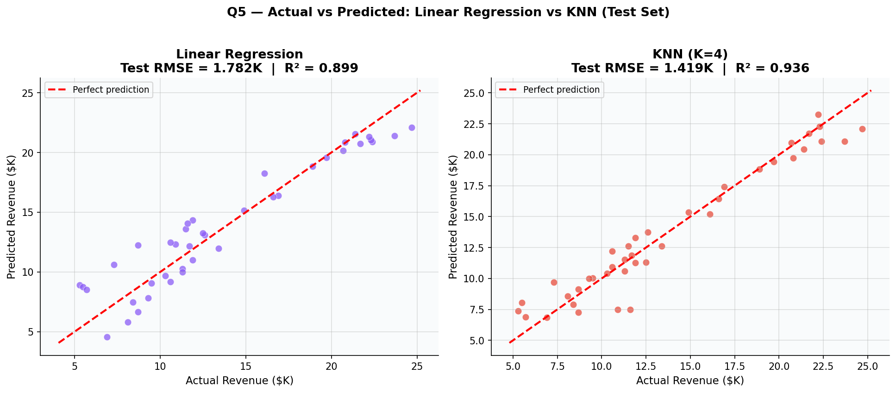
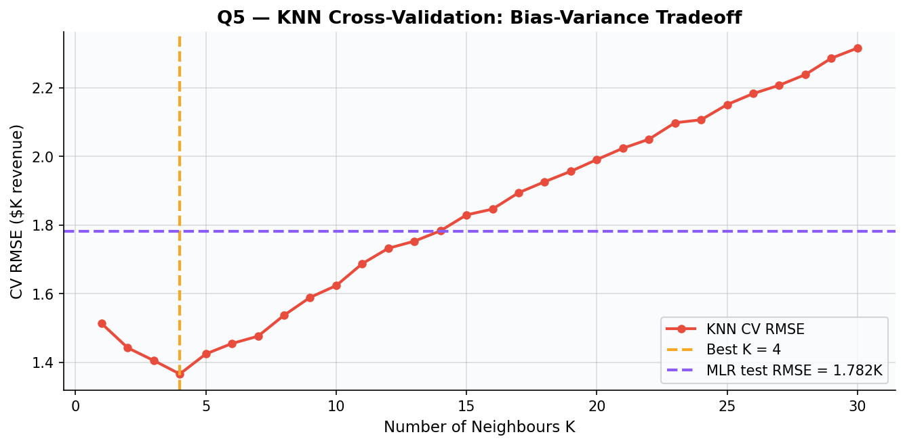
Bối cảnh: Tất cả Q1–Q5 dựa trên giả định OLS. Nếu vi phạm → p-values, CIs không hợp lệ.
| Giả định | Test | Kết quả | |
|---|---|---|---|
| Linearity | Res. vs Fitted | Ngẫu nhiên | ✓ |
| Independence | Durbin-Watson | d = 2.084 | ✓ |
| Normality | Shapiro-Wilk | W=.918, p=.000 | ⚠ |
| Equal var. | Breusch-Pagan | p = .162 | ✓ |
| VIF | All predictors | 1.00–1.15 | ✓ |
Shapiro-Wilk ⚠: Rất nhạy ở n=200. Q-Q chỉ lệch nhẹ ở đuôi. CLT đảm bảo suy luận xấp xỉ hợp lệ. KNN (phi tham số) → kết quả tương tự → xác nhận mô hình hợp lệ.
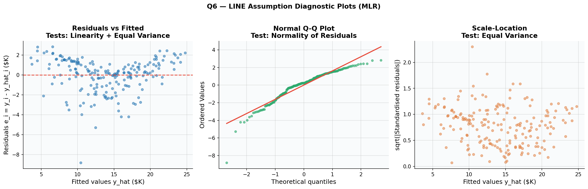
Bối cảnh: MLR cộng giả định mỗi kênh độc lập. Thực tế, TV + Radio đồng thời → nhiều hơn tổng riêng lẻ?
| Biến | β̂ | p-value | Diễn giải |
|---|---|---|---|
| TV | 0.0191 | <.001 | TV khi Radio=0: +19/$1K |
| Radio | 0.0289 | .001 | Radio khi TV=0: +29/$1K |
| NP | −0.001 | .862 | Vẫn không ý nghĩa |
| TV×Radio | 0.001087 | <.001 | Synergy xác nhận! |
| Mô hình | R² | RMSE |
|---|---|---|
| MLR cộng | 0.8972 | 1.69K |
| +TV×Radio | 0.9678 | ~0.93K |
+7.1% R², −45% RMSE — cải thiện đơn lớn nhất!
∂Sales/∂TV = β̂₁ + β̂₄ × Radio
| Radio | TV return/$1K | Hệ số nhân |
|---|---|---|
| $0K | +19 | 1.0× |
| $10K | +30 | 1.6× |
| $20K | +41 | 2.2× |
| $30K | +52 | 2.7× |
| $40K | +63 | 3.3× |
Tại Radio=$30K: mỗi $1K TV → 2.7× lợi nhuận so với không có Radio!
| Thành phần | Tính toán | Đóng góp |
|---|---|---|
| TV main | 0.0458 × 100 | 4.58K |
| Radio main | 0.1885 × 30 | 5.66K |
| Synergy | 0.001087×100×30 | 3.26K |
| Tổng | 13.49K | |
| Synergy share | 3.26 / 13.49 | 24.2% |
1 trong 4 đơn vị doanh số từ quảng cáo đến từ tương tác TV×Radio — doanh thu miễn phí chỉ cần đồng lịch!
Newspaper vẫn không liên quan (p = .862).
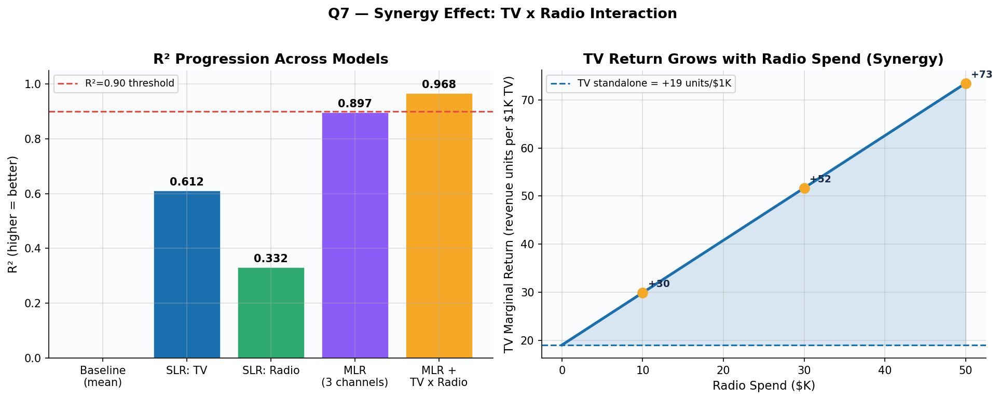
| Q | Câu hỏi | Trả lời | Kết quả chính |
|---|---|---|---|
| Q1 | Quảng cáo thúc đẩy doanh số? | Có — mạnh mẽ | F = 570.3, p < .001 |
| Q2 | Mạnh đến mức nào? | Triển khai được | R² = 0.897, RSE = 1.686K |
| Q3 | Kênh nào quan trọng? | TV & Radio | Newspaper p = .860 |
| Q4 | Tác động bao lớn? | Radio 4× TV | Radio +189; TV +46 /$1K |
| Q5 | Dự báo thị trường mới? | ±$1,782 | Test RMSE = 1.782K, R² = 0.899 |
| Q6 | Mô hình hợp lệ? | Có | DW=2.08✓, BP p=.16✓ |
| Q7 | Có Synergy? | 24.2% bonus | ΔR² = +0.071 |
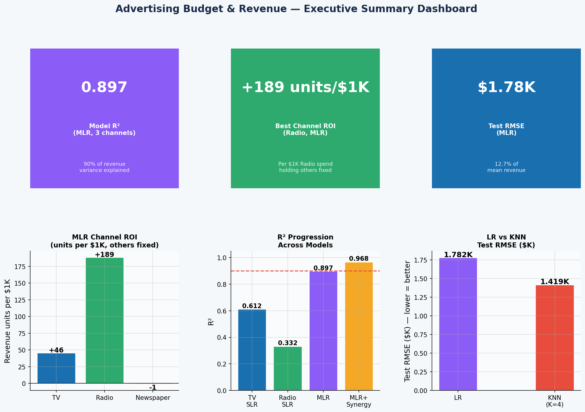
| # | Khuyến nghị | Chi tiết |
|---|---|---|
| 1 | Loại bỏ Newspaper | β̂ = −0.001, p = .860. Proxy cho Radio (r = 0.354). Chuyển $30.5K → Radio/TV. |
| 2 | Ưu tiên Radio | +189 đơn vị/$1K — 4.1× hiệu quả hơn TV. Tăng thị trường dưới $22.9K. |
| 3 | Duy trì TV mạnh | Động lực khối lượng chính (R² = 0.612 riêng). Kích hoạt Synergy multiplier. |
| 4 | Đồng lịch TV + Radio | Synergy 24.2%. Radio=$30K → TV return 2.7×. Chi phí thêm = $0. |
| 5 | Triển khai dự báo | Test R² = 0.899, RMSE = $1,782. Đủ chính xác cho phân bổ ngân sách hàng quý. |
| Hạng mục | Trước | Sau | Δ |
|---|---|---|---|
| TV | $147K | $162K | +$15K |
| Radio | $23.3K | $38.3K | +$15K |
| Newspaper | $30.5K | $0K | −$30.5K |
| Total | $200.8K | $200.3K | −$0.5K |
TV: +0.0458×15 = +0.687K
Radio: +0.1885×15 = +2.828K
NP removed: +0.031K
Tổng: +3.546K đơn vị/thị trường
= +25.3% trên 14.02K hiện tại
Với synergy: có thể vượt +4K!
[1] James, Witten, Hastie, Tibshirani — ISL, Springer 2023, Ch. 3
+ 16 tài liệu bổ sung (chi tiết trong báo cáo đầy đủ)
[1] G. James et al., An Introduction to Statistical Learning with Applications in Python, 2nd ed., Springer, 2023.
[2] "Application of MLR on Sales Prediction," HBEM, DRPress, 2024.
[3] Y. H. Yasser, "Advertising Sales Dataset," Kaggle, 2022.
[4] "Improved Linear Regression in Business Analysis," Procedia CS, Elsevier, 2023.
[5] "Advertising Investment and Sales," JAEPS, EWA Publishing, 2024.
[6] R. Vershynin, "All of Linear Regression," arXiv:1910.06386, 2019.
[7] M. Oyelaran, "EDA: Advertising Spend vs Sales," Medium, 2023.
[8] Google Developers, "Linear Regression," ML Crash Course, 2024.
[9] H. Thapa, "Ad Dataset: Linear Regression," LinkedIn Pulse, 2023.
[10] Scikit-learn Developers, "sklearn.linear_model.LinearRegression," 2023.
[11] N. Gaud, LinkedIn Profile — Data Science Practitioner, 2023.
[12] C. F. Gauss, Theoria motus corporum coelestium, 1809.
[13] A. E. Hoerl & R. W. Kennard, "Ridge regression," Technometrics, 1970.
[14] P. A. Naik & K. Raman, "Synergy in multimedia communications," JMR, 2003.
[15] R. Sethuraman et al., "Brand advertising elasticities," JMR, 2011.
[16] R. Tibshirani, "Regression shrinkage via Lasso," JRSS B, 1996.
[17] H. Zou & T. Hastie, "Elastic net," JRSS B, 2005.